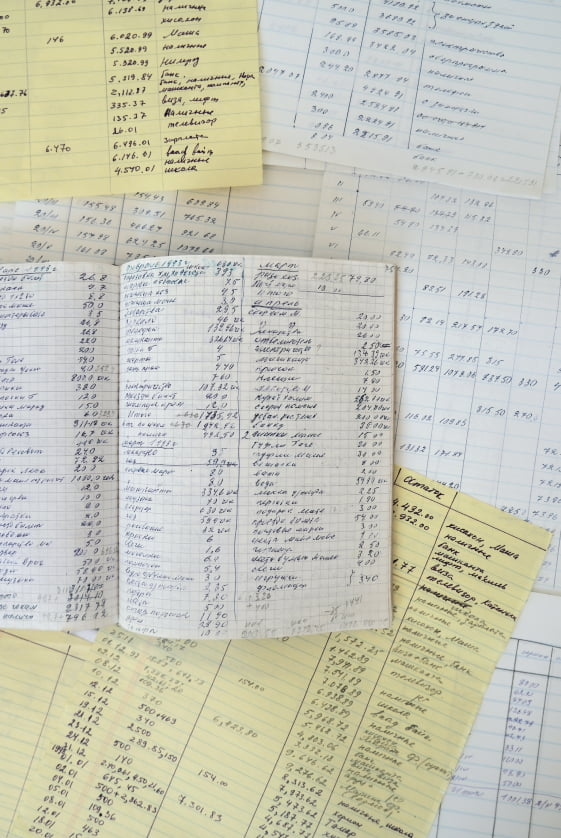
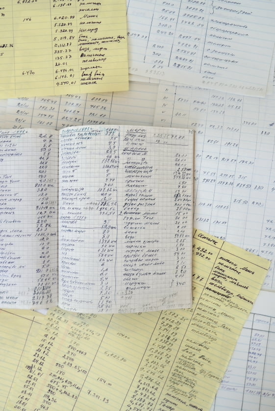
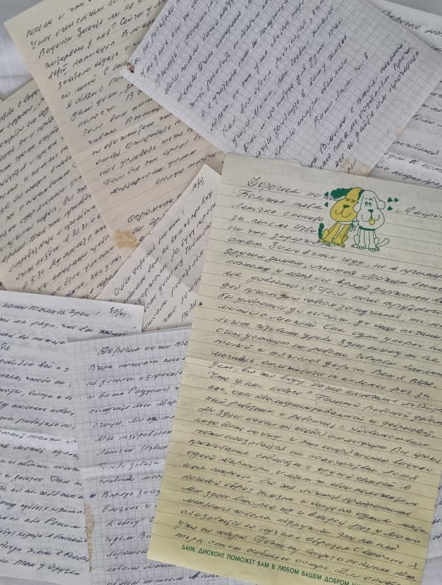

глава 04
моя мама
Четвёртая глава принадлежит моей маме.
Мои родители почти всю жизнь, кроме ранних лет и лет войны, прожили в Москве. За эти годы у них появилось множество друзей и просто хороших знакомых. Большинство родственников тоже жили в Москве. Жил в Москве с семьей и мой старший брат — их первенец, любимый сын.
И вот 1989 год. Маме 82 года. Я спрашиваю её: "Я хочу уехать в Израиль. Поедешь со мной?" Мама, не задумываясь ни на секунду, отвечает: Если я буду тебе там полезна — я с тобой. Сейчас я сама в её возрасте и — ох, как понимаю… Как тяжело, будучи старым и очень больным человеком, оставить привычную обстановку, родной дом, сложившийся круг общения, любимого сына — и отправиться в полную неизвестность, в неустроенность.
Моя мама не оставила мне богатства, но пример жизни я получила редкостный.
Мама была полезна, не то слово. Я целыми днями на работе, а Маша ещё мала, ей всего восемь лет. В таком возрасте ребёнок не должен проводить весь день в одиночестве. Мама встречала её из школы, кормила, выслушивала рассказы о школьных делах. Иногда они вместе играли в настольные игры или в карты.
Меня мама тоже встречала с работы — спрашивала, как прошёл день, делилась своими новостями, кормила ужином. Около десяти вечера Маша ложилась спать, и мама садилась рядом, держала её за ручку и рассказывала сказки-расказки собственного сочинения.
Все финансовые вопросы я передала маме. Так — она всегда в курсе наших дел, а мне спокойнее — свой личный, высококвалифицированный "бухгалтер"! Мама c ее неизменной активной жизненной позицией все, что делала, делала вдумчиво, ответственно. И что вы думаете — мама обнаружила ошибку в банковских операциях! А ведь все документы были на иврите, которого мама не знала. Банк признал ошибку и вернул нам 500 шекелей.
 

Мама как-то попросила купить ей блокнот — С тех пор она вела его с нашими расходами, как бухгалтер на миссии. Даже мороженое за 3 шекеля туда попадало.
Однажды в Бейт-Шемеше мама участвовала в выборах в городской совет. Завидев пожилую избирательницу, агитаторы, почуяв лёгкую добычу, наперебой бросились к ней, стараясь всучить бюллетени своих кандидатов. Но эта пожилая, "ола хадаша" оказалась не так беспомощна, несмотря на то, что прочитать имя кандидата написанное, естественно, на иврите не могла. Накануне мы обсудили за кого будем голосовать. Имя его теперь не припомню, пусть будет Давид. Мама показывает бюллетень и спрашивает: "Это Давид?" Ей с готовностью отвечают - Да, Давид! Но и на другой и третий - тот же ответ. Мама понимает, что дело не чисто. Тогда меняет тактику и спрашивает: Это кто?" и быстро определяет нужный бюллетень.
Мама скрупулезно записывала наши расходы/доходы. Возможно это в какой-то степени помогло нам скопить небольшую сумму, которая, когда мы покупали квартиру, очень нам помогла. Только из маминых писем я узнала, как нелегко давалась ей наша олимовская неустроенность. Мне она не пожаловалась ни разу. Ее стойкость, оптимизм, живость ума и доброжелательность притягивала людей.
Одна из наших знакомых говорила: "В доме чувствовалась какая-то особая атмосфера и было понятно, что она исходит от мамы." Другая удивлялась: "Ваш дом совсем не похож на олимовский. Как-будто вы здесь давно."
Моя мама не оставила мне богатства, но пример жизни я получила редкостный.
Из писем моей мамы
Из писем моей мамы
“Пятого января отметили Машенькино десятилетие. Пришли девочки и два мальчика. Взрослых не было. Решили этот день целиком посвятить детям. И они этим воспользовались. Было весело и шумно. Одна девочка изображала клоуна. Маша в галином махровом халате с теплым платком на голове и с закрытом зонтиком вместо клюки изображала бабу ягу. Согнулась вдвое и потом в этом положении лихо отплясывала. Воздушные шары, подталкиваемые ребятами летали по всей комнате и дети визжали от восторга. Да была еще музыка. Родители одной девочки принесли орган, плюс наше пианино - можете вообразить какой шум, зато весело. И никто нам не указывает, не упрекает, что шумно, много ребят и вообще.”
“Ну хлопоты эти радостные. А я уж стараюсь, чтобы к ее приходу Маша была уложена и ужин готов.”
“Здесь почему - то все очень устают. Говорят климат такой и тяжелая дорога. Вот я перемогаясь, отлеживаясь по несколько раз за день, все же веду наше несложное хозяйство.”
“Такая радость, что хочется бесконечно повторять: покупаем квартиру. Мечтали о двухкомнатной, а получилась трехкомнатная!”
“И хоть многого не хватает, но мы совершенно счастливы. Все радует. И то, что мы одни своей семьей и что комнаты светлые и соседи хорошие и что из окон чудесный вид. Вплоть до горизонта холмы увитые зеленью, белые дома с красными черепичными крышами и белые ленты дорог. Галя даже не хочет закрыть окна занавесами, да по првде говоря сказать их у нас нет. Это не огорчает.”
“Я стараюсь, чтобы ей меньше оставалось дел по дому.”
“Стараюсь заниматься с Машей русским языком. Хоть немного читать и писать.”
“Спасибо огромное за поздравление с днем рождения. Думаем, вернее Галя хочет, собрать наших соседей по площадке отметить этот день. Соседи у нас очень хорошие. Одни очень заботливо и внимательно к нам относятся, а с другими не только добрососедские отношения, но и дружеские. Интересные люди и я бесконечно рада, что рядом такие люди. У них еще отличная библиотека.”
“Рассчитываем от безработного оптимизма перейти на реальную работу с зарплатой. Наверное с апреля. Сейчас зачитываюсь автобиографией Натальи Ильиной "Дороги и судьбы" И как мне теперь понятны описываемые ею тяготы и переживания эмигрантской жизни в Шанхае.”
“Очень добрые отношения с хозяином и его женой. Кстати, его жена занимается с Машей торой. Маша охотно к ней ходит. На днях хозяин с женой и родителями были у нас в гостях. Интеллигентные и видимо хорошие люди.”
“Как то нормальнее стала жизнь.”
“Понемногу обживаемся, купили платяной шкаф, шкаф для книг и шкафчик для обуви. А вот стулья еще не можем купить. Зато вид из окна потрясающий. окно, как большая рама чудесной картины. Не можем налюбоваться.”
Из писем моей мамы
“Ну хлопоты эти радостные. А я уж стараюсь, чтобы к ее приходу Маша была уложена и ужин готов.”
“Пятого января отметили Машенькино десятилетие. Пришли девочки и два мальчика. Взрослых не было. Решили этот день целиком посвятить детям. И они этим воспользовались. Было весело и шумно. Одна девочка изображала клоуна. Маша в галином махровом халате с теплым платком на голове и с закрытом зонтиком вместо клюки изображала бабу ягу. Согнулась вдвое и потом в этом положении лихо отплясывала. Воздушные шары, подталкиваемые ребятами летали по всей комнате и дети визжали от восторга. Да была еще музыка. Родители одной девочки принесли орган, плюс наше пианино - можете вообразить какой шум, зато весело. И никто нам не указывает, не упрекает, что шумно, много ребят и вообще.”
“Здесь почему - то все очень устают. Говорят климат такой и тяжелая дорога. Вот я перемогаясь, отлеживаясь по несколько раз за день, все же веду наше несложное хозяйство.”
“Такая радость, что хочется бесконечно повторять: покупаем квартиру. Мечтали о двухкомнатной, а получилась трехкомнатная!”
“Я стараюсь, чтобы ей меньше оставалось дел по дому.”
“И хоть многого не хватает, но мы совершенно счастливы. Все радует. И то, что мы одни своей семьей и что комнаты светлые и соседи хорошие и что из окон чудесный вид. Вплоть до горизонта холмы увитые зеленью, белые дома с красными черепичными крышами и белые ленты дорог."
"Галя даже не хочет закрыть окна занавесами, да по првде говоря сказать их у нас нет. Это не огорчает.”
“Стараюсь заниматься с Машей русским языком. Хоть немного читать и писать.”
“Как то нормальнее стала жизнь.”
“Рассчитываем от безработного оптимизма перейти на реальную работу с зарплатой. Наверное с апреля. Сейчас зачитываюсь автобиографией Натальи Ильиной "Дороги и судьбы" И как мне теперь понятны описываемые ею тяготы и переживания эмигрантской жизни в Шанхае.”
“Очень добрые отношения с хозяином и его женой. Кстати, его жена занимается с Машей торой. Маша охотно к ней ходит. На днях хозяин с женой и родителями были у нас в гостях. Интеллигентные и видимо хорошие люди.”
“Спасибо огромное за поздравление с днем рождения. Думаем, вернее Галя хочет, собрать наших соседей по площадке отметить этот день. Соседи у нас очень хорошие. Одни очень заботливо и внимательно к нам относятся, а с другими не только добрососедские отношения, но и дружеские. Интересные люди и я бесконечно рада, что рядом такие люди. У них еще отличная библиотека.”
“Понемногу обживаемся, купили платяной шкаф, шкаф для книг и шкафчик для обуви. А вот стулья еще не можем купить. Зато вид из окна потрясающий. окно, как большая рама чудесной картины. Не можем налюбоваться.”